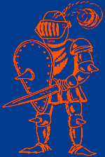

| Rytíøi krále Artu¹e |
 |
|
KDY A KDE SE AKCE KONÁ Akce se uskuteèní na Dale¹ické pøehradì a jejím nejbli¾¹ím okolí o víkendu 2. - 4. 6. 2006 viz MAPA a DETAILNÍ MAPA DOPRAVA NA AKCI Nejlep¹í spojení - vlakem smìr Jihlava, zastávka Studenec (mezi Námì¹tí nad Oslavou a Tøebíèem). Doporuèujeme jet tímto vlakem: Brno (odj. 17:37) - Studenec (pøíj. 18:57), pøestup v Tøebíèi Od tohoto vlaku bude zaji¹tìn odvoz lodí na táboøi¹tì autama! Pokud pøijedete autem, buïte na táboøi¹ti nejpozdìji v 19:45 hodin! (platí ale i pro cestu od vlaku! :-) ) Pøedpokládaný spoj zpìt: Studenec (odj. 16:58) - Brno (pøíj. 18:10) TÁBOØI©TÌ A JAK SE TAM DOSTAT Táboøi¹tì bude v tìsné blízkosti silnièního mostu mezi vesnicemi Tøesov u Hartvíkovic a Stropì¹ím u Dale¹ic na bøehu u Tøesova. Je to stejné táboøi¹tì, jako loni. POKUD PØIJEDE© VLAKEM - pùjde¹ pì¹ky po této trase: od vlaku do vesnice Studenec, ze Studence pùjde¹ smìrem Tøesov (pøip. Hartvíkovice), tj. Studencem projede¹ rovnì a za Studencem zahne¹ na køi¾ovatce doleva. Pak dojde¹ na køi¾ovatku tvaru T a zahne¹ doprava a jsi ve Tøesovì. V Tøesovì se dá¹ na køi¾ovatce opìt doprava (smìr Kozlany/Stropì¹ín) a za Tøesovem odboèí¹ doleva (smìr pøehrada, Stropì¹ín). Tìsnì pøed pøíchodem na most je po pravé stranì silnice cesta dolù k vodì. Tou se dá¹ a tam u¾ nás najde¹. POKUD PØIJEDE© AUTEM - podívej se do automapy a najdi si tam zmínìný most. Je to silnice 399 z Námì¹tì nad Oslavou. |